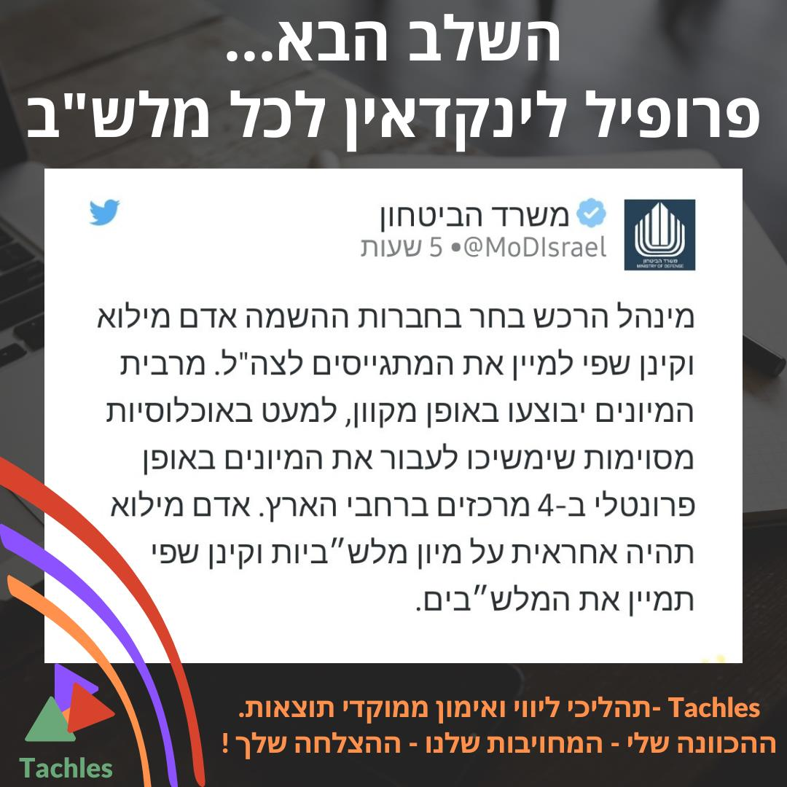

צה"ל מוציא למיקור חוץ את תהליך המיון של המועמדים לשירות בטחון, זו לא הפעם הראשונה שאנו נתקלים שתחומים שצה"ל מוציא החוצה: תחום הבנוי, ההסעדה, הובלות ולוגיסטיקה ואפילו אחזקת מטוסים בחיל האוויר. והשאלה שעולה בי היא מה הגבול ? מה נכון לארגון או לחברה להוציא למיקור חוץ ומה כדאי להשאיר תחת מוטת השליטה הישירה של הארגון ?
יש אמרה בריטית שנלמדת בכל בית ספר למנהל עסקים -
Do your BEST, outsource the REST.
הכוונה פשוטה: חשוב להתמקד באותם הדברים שאותם עושה החברה או ארגון מצויין, ואת הדברים שבהם הוא פחות טוב להוציא למיקור חוץ.
רוב החברות תופסות את מיקור החוץ כהזדמנות לחסוך כסף, לתפיסתי החיסכון הכספי חשוב אך הוא לא היתרון המרכזי של מיקור חוץ; כאשר עושים את התהליך באופן מושכל ניתן להגיע לפריצות דרך משמעותיות בארגון על ידי הקניית יכולות טכנולוגיות בעלויות נמוכות ובזמן קצר שלא היו לחברה עד כה (במקום לבנות את היכולות הטכנולוגיות משתמשים בחברות שכבר פתחו אותן). מזכיר מאד את שיטת מכבי תל אביב בכדורסל, במקום לגדל שחקני כדורסל הייתה נוהגת לקנות את כל השחקנים הטובים בתפקידים שהיו חסרים לה וכך יצרה הגמוניה לאורך שנים ושלטה בכדורסל הישראלי.
מנסיוני מצאתי שיש מספר עקרונות עליהם חשוב להקפיד בתהליך קבלת ההחלטה האם ומה להוציא מהארגון למיקור חוץ:
1. להשאיר את ליבת החברה ? תהליך הליבה של החברה חייב להישאר תחת השליטה המלאה של החברה ולכן לא נכון להוציא אותו למיקור חוץ, בדרך כלל בתהליך זה גם שמורים הסודות המסחריים של החברה שיוצרים את הבדול והיתרון היחסי שלה על פני המתחרים.
2. להשאיר תהליכים עתירי כ"א וידע - נכון להשאיר החברה ולא להוציא למיקור חוץ. הוצאה של תהליכים עתירי ידע עלולים לחשוף את החברה לזליגת ידע החוצה ולמתחרים. עוצמתה של חברה הוא המשאב האנושי שלה והוצאת אנשים בעלי ידע מחוץ לחברה מערערת את יציבותה לאורך זמן.
3. מה כדאי להוציא החוצה ? בדרך כלל נושאים שהם במעטפת ואינם קריטיים לחברה, דברים גנריים שאין לחברה כל יתרון ביצור עצמי, תהליכים עתירי כ"א לא מיומן, אותו ניתן למצוא באזורים בהם השכר נמוך יותר ובכך להוזיל עלויות. אם מחברים למהלך מיקור החוץ תהליך של בקרת איכות קפדנית ניתן להגיע למקסום עלויות יחסית לאיכות ולקבל Value for Money ששווה את המאמץ הכרוך בבניית תהליך מיקור החוץ.
תהליך של מיקור חוץ הוא תהליך מורכב, הוא דורש בחינה מעמיקה של תהליכי העבודה בארגון, הסתכלות פיננסית ובחינה של החיסכון יחסית לסכון שבירידה באיכות התוצר או השירות של החברה. חשוב לעשות אותו צעד אחר צעד.
יחד עם זאת טמונה באופציית מיקור החוץ הזדמנות מצויינת לפריצת דרך משמעותית לארגון, שכן היא מאפשרת צמיחה מהירה תוך סיכון נמוך ובעיקר מאפשרת לחזור אחורה בקלות עם תהליך השינוי לא מצליח.
ארגון שפוסל את אופציית מיקור החוץ אוטומטית וממשיך "לעשות הכל" טועה, הוא קופא במקום ולאורך זמן יאבד את היתרון היחסי שלו מול המתחרים שלו, חשוב לבחון באופן תדיר מה ניתן להוציא החוצה ובעיקר איך לעשות זאת בצורה נכונה, זה האתגר המשמעותי ביותר היום של מחלקות הפיתוח העסקי.
בעידן של שינויים מתמידים ושל ארגונים שנדרשים להתאים את עצמם באופן תדיר, מהווה אופציה מיקור החוץ גורם משמעותי ודומיננטי. חשוב שכל ארגון ינהל חשיבה מתמדת על אסטרטגיית מיקור החוץ שלו. מי שלא ישכיל לשלוט באפשרות עלול למצוא את עצמו מאחור.
פורסם במקור בבלוג שלי ב-BizMakeBiz.